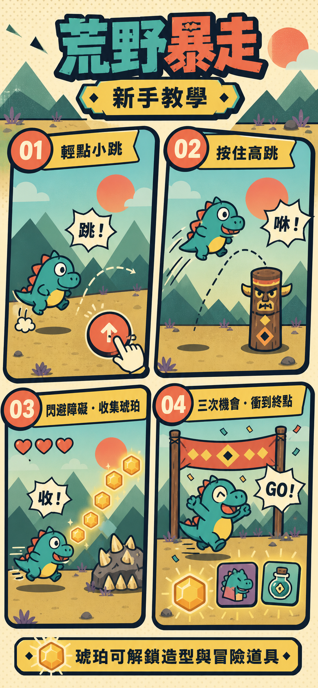

01
STAGE ADVENTURE
闖關模式
完成目標距離解鎖下一關，六個關卡逐步進階。
目前進度第 1 關
DINO DASH / GAME 001
小短腿，大冒險。越過荒原，把發光琥珀全部帶回家！

TWO WAYS TO DASH
闖關有明確終點；無盡則從輕鬆熱身一路加速。
完成目標距離解鎖下一關，六個關卡逐步進階。
開局非常簡單，跑得越遠速度越快、障礙越密。
OUTFIT & SUPPLIES
造型可永久使用，道具會在單局中消耗。奔跑收集的琥珀都會存入餘額。
闖關或無盡結束後，本局收集的琥珀會自動存入餘額。
DASH RECORDS
只記錄這臺裝置的最佳暴走距離。
完成第一次挑戰，成績就會保存在這裡。